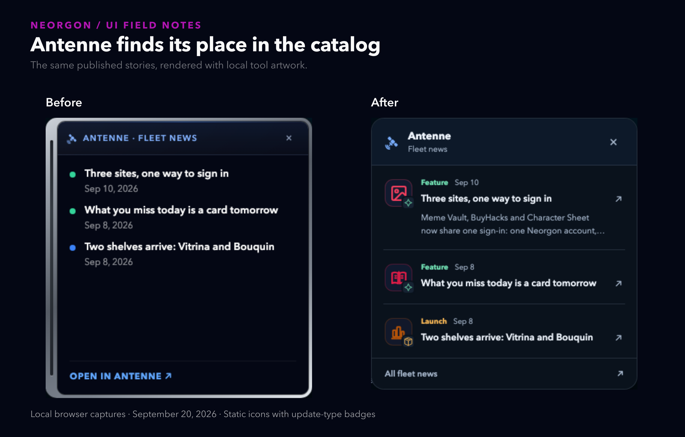
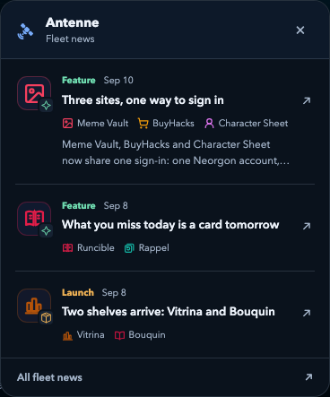

Asking GPT-6 Astra to improve a page that already had a personality
Draft for the model review. This is one local coding session, with screenshots and checks. The model name follows the session brief; no API model identifier, cost, or timing benchmark was recorded.
I asked for a fairly ordinary thing: make my site look better, but keep it looking like my site.
Neorgon already had the dark background, floating category pills, colored tool icons, and the slightly excessive affection for things glowing in space. I wanted to keep that. The bit that bothered me was Antenne, the fleet-news box in the corner. It had a thick silver frame around a list of headlines. The rest of the page was a catalog of recognizable tools; the news box gave those tools colored dots.
My suggestion was small: put a little tool preview beside each story, with a symbol for the kind of change. A plus for a fix. A package for something shipping.

The interesting change was under the frame
The old popup fetched the news feed to decide whether there was something new. Then it loaded an iframe to show the stories. That meant the hub owned the frame while another page owned everything inside it.
The new version renders the latest three stories from the feed it already fetched. Each row borrows its tool icon and accent from the catalog. The story's type gets a separate badge: a package for a launch, a sparkle for a feature, a plus for a fix, and a document for a note. The label is written beside the date, so understanding the list does not depend on memorizing symbols or distinguishing colors.
The silver surround became a thin, blue-tinted border. The newest story gets a short summary. A single link at the bottom opens the full news site. There is still a satellite, because of course there is.
These are static miniatures. At that size, a GIF would mostly animate pixels I cannot read. The catalog already has optional GIF previews where there is room to show the tool doing something.
A small visual request exposed a state problem
The popup used to remember the newest publication date when I dismissed it. Two stories published on the same day looked identical to that check. Once I had dismissed the first one, the date alone could not tell it that another had arrived.
It now remembers the IDs and dates of the visible stories. A new story on the same date reopens the bulletin. An edition I already dismissed stays behind the small Antenne button.
That change also has a migration cost: an older saved date is not the new edition identifier, so existing visitors can see the bulletin once again after this update. It is a deliberate consequence of changing what "seen" means.
Keyboard behavior got attention too. Opening the dock puts focus on the close button. Dismissing the bulletin returns focus to the dock. Escape works while focus is inside the bulletin. An automatic appearance leaves focus where it was.
The rest of the page needed a lighter hand
The catalog got more space between groups and a little more space between cards. Fine rules extend from the section headings. Card borders pick up a small amount of each tool's accent, making their boundaries easier to read against the background. Keyboard focus gets the same background wash as hover.
The existing typography and hero stayed. This was the useful part of the exercise for me: the request left room for judgment, but the page already supplied most of the design decisions.
What this tells me about the session
For this part of the GPT-6 Astra review, the evidence is the patch, the browser captures, and the checks. The agent read the site's product and design context, reused the local artwork, and exercised the popup's behavior after changing its structure.
The first repository check stopped because the default Python interpreter was too old for the icon checker. It passed using the installed Homebrew Python. The browser harness covers dismissal, reopening, same-day additions, malformed records, unavailable storage, long titles, and small viewports. It also checks that search still works when the feed is unavailable.
There is a cost to removing the iframe: the hub now owns a small news renderer. If Antenne adds a new story kind, this renderer needs to learn it. It currently skips unsupported kinds. The first pass gave a story about several tools only its first matching catalog icon. That was useful shorthand but incomplete; the follow-up below addresses it. Unknown tools get the satellite.
I have no measured discovery-speed improvement to report. No controlled comparison with another model, either. The initial release was subsequently pushed to main, and its real news feed was checked on the production site. This session demonstrates a bounded interface change with inspectable results; it does not settle a model ranking.
The follow-up made it useful in more places
After the visual pass, I asked for the next three priorities in order.
First, Antenne became reachable on phones. A small button opens the news when I ask for it. It makes no feed request before that tap, and a failed request gives me a retry button. It does not cover the catalog on arrival.
Second, previews got explicit controls. Keyboard users can open one with Enter or Space, and touch users can tap it. Escape returns focus to the control. With reduced motion enabled, the GIF is decoded off the page and one still frame is painted onto a canvas. The animated image never appears in that mode. The same controls work on the Recently shipped and Favorites shelves.
Third, stories about several tools now name the recognized linked tools under the headline, with their own icons. Repeated links collapse into one label. The whole story stays one link.

The follow-up checks passed in Chromium and WebKit: 56 assertions for the news bulletin and 28 for previews in each browser. That covers behavior I can inspect. I still want actual use to tell me whether the page is easier to scan.
Built for Neorgon. Workflow: impeccable for the design pass, debrief for the evidence deck, writeup for this draft, and writing-clearly-and-concisely plus humanizer for the prose.